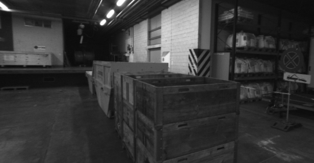
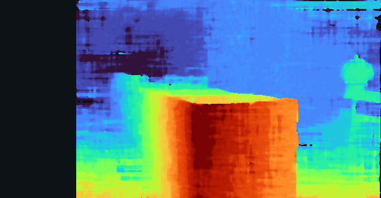

ETH3D delivery_area_1l · calibrated rectified pair · 640 × 332 inference


Dark pixels are invalid estimates, not zero depth. Color visualizes disparity. This is the implemented geometric baseline; it is not a newly trained stereo network. Full disparity/depth arrays and a sampled XYZ cloud are downloadable.